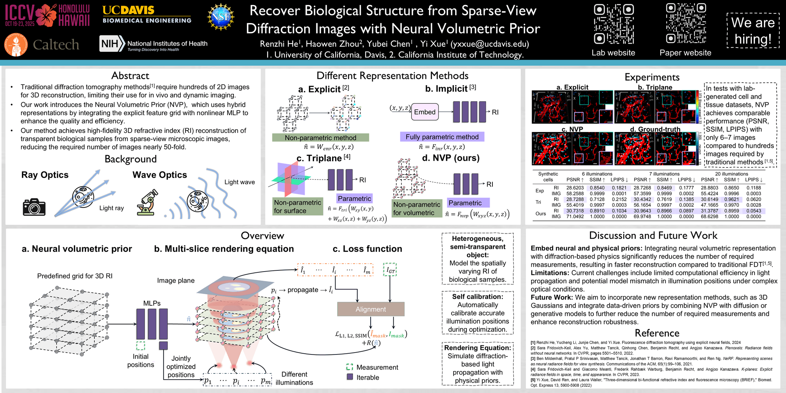

Recover Biological Structure from Sparse-View Diffraction Images with Neural Volumetric Prior
International Conference on Computer Vision, ICCV 2025
Aug 2024 – Nov 2024
i) We demonstrate, for the first time, the capability to reconstruct volumetric RI of semi-transparent biological samples from diffracted fluorescence images with limited angles and sparse views, validated through both simulations and real-world experiments. This work opens up a new avenue in diffraction-informed neural volumetric representations.
ii) We demonstrate the effectiveness and efficiency of NVP in optical tomography, reducing the required number of images by nearly 50-fold and processing time by 3-fold compared to previous methods in our demonstrated experiments.
iii) We leverage the physical prior of light diffraction to achieve physically accurate rendering and quantitative RI reconstruction of volumetric objects, overcoming the limitations of ray-optics models at microscale imaging and broadening the applicability of neural fields in microscopic imaging.